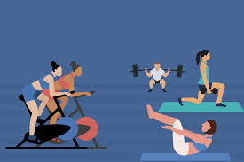
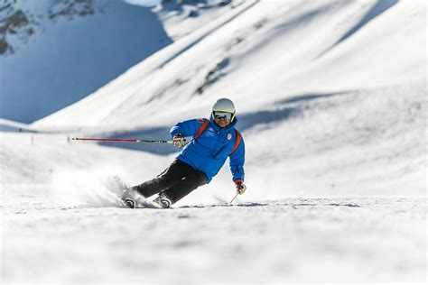

background

Personality
Personality Type
I took the personality test: here and got the result of INFP(Mediator)
A Mediator's personality traits are deep empathy, creative thinking, and strong values.
They are also prefer more solitary activites and focus on deep specific intrests.
Favorite Things
My favorite candy is Reese's, my favorite color is orange, and my favorite food is steak. I also love to go to the gym, hang out with friends, and play sports.

Hobbies
Some of my main hobbies are:
- Hiking
- Programming
- Skiing
- Skateboarding
